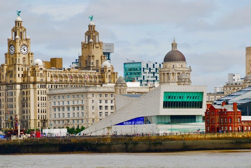

Liverpool (/ˈlɪvərpuːl/) is a city in North West England, with an estimated population of 491,500 in 2017.[5] Its metropolitan area is the fifth-largest in the UK, with a population of 2.24 million in 2011.[6] The local authority is Liverpool City Council, the most populous local government district in the metropolitan county of Merseyside and the largest in the Liverpool City Region. 